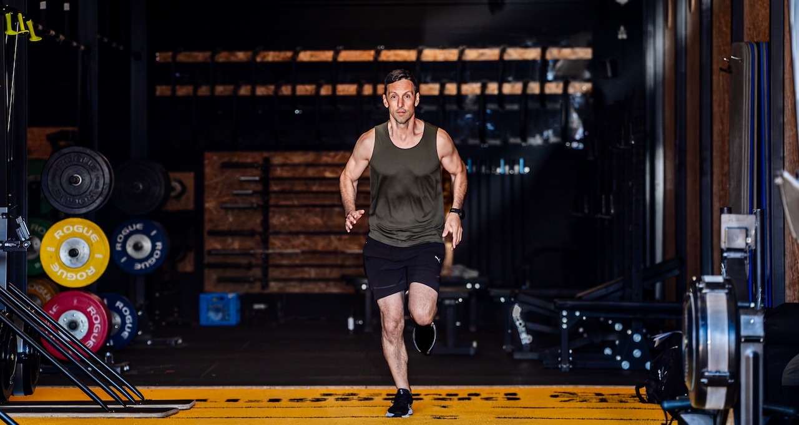
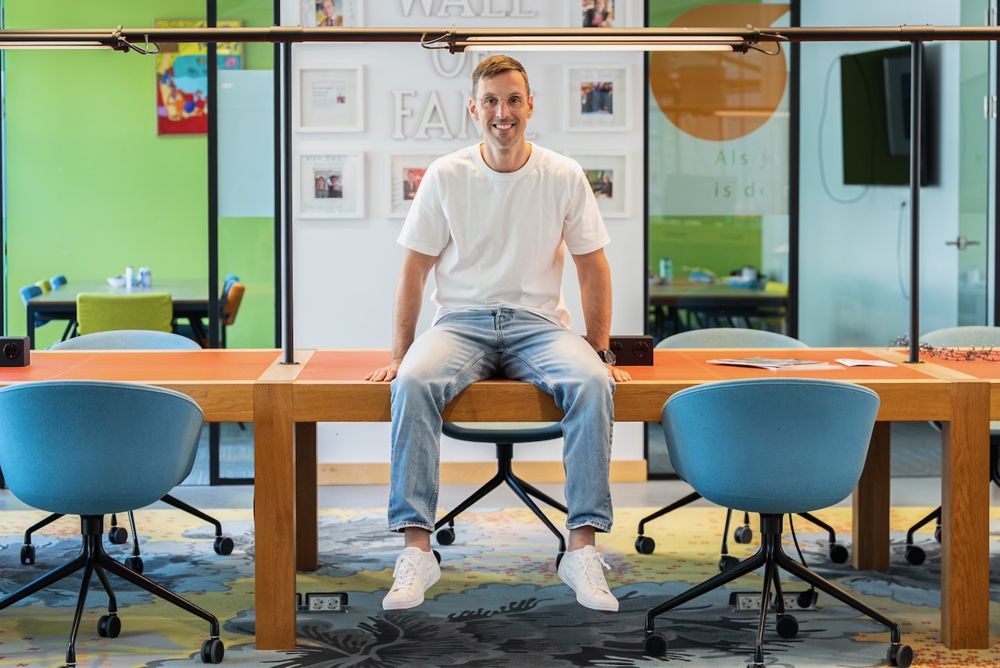

Rasoptimist over AI. Met open ogen voor de schaduwkant.
Ik ben Matthijs van Meurs. Ik train teams in het gebruik van AI, spreek op events en help organisaties met de keuze en invoering van tools. Vanuit Amsterdam, in heel Nederland.

AI kan werk beter maken. Als je weet wat je doet.
Ik ben een optimist. Ik zie elke week hoe AI mensen helpt om saai werk sneller te doen, betere teksten te schrijven en meer tijd over te houden voor het werk dat ertoe doet. Dat enthousiasme neem ik mee in elke training.
Maar ik zie ook de andere kant. Mensen die uit onwetendheid alles in een chatbot stoppen: klantgegevens, personeelsdossiers, contracten. Zonder enig idee wat er met die data gebeurt. Niet uit onwil, maar omdat niemand het ze ooit heeft uitgelegd. Dat vind ik een echt risico, voor organisaties én voor de mensen wier gegevens het zijn.
En dan is er nog het grotere plaatje. We zijn als Europa opvallend afhankelijk geworden van een handvol Amerikaanse bedrijven, en steeds vaker ook van Chinese modellen. Wie de voorwaarden bepaalt, bepaalt uiteindelijk wat er met onze data gebeurt. Ik geloof in een sterk Europees AI-initiatief en in organisaties die bewust kiezen waar hun gegevens staan. Niet uit angst, maar uit gezond verstand.
Drie dingen die je van mij kunt verwachten
Nuchter en direct
Geen hype, geen jargon en geen doemscenario's. Ik vertel wat AI vandaag kan, waar het faalt en wat dat betekent voor jullie werk.
Praktijk boven theorie
Elke training draait om jullie eigen taken. Deelnemers gaan naar huis met iets wat ze morgen gebruiken, niet met een stapel slides.
Privacy ingebouwd
Datahygiëne, voorwaarden van tools en werkafspraken zijn geen los hoofdstuk, maar zitten in alles wat ik doe verweven.

Gedachten, gevoelens, acties, resultaten
Dat model hangt niet toevallig in mijn presentaties. Wat je denkt over iets bepaalt wat je ermee doet. Dat geldt voor sporten, en het geldt voor AI. Wie bang is, vermijdt. Wie overenthousiast is, doet klakkeloos alles. Ik help mensen naar het midden: nieuwsgierig, kritisch en in beweging.
Buiten het werk vind je me in de sportschool of op de weg. Discipline en herhaling, dezelfde ingrediënten die nodig zijn om iets nieuws te leren.
Hiervoor kun je bij mij terecht
- AI-training in-company voor teams en hele organisaties
- Workshops van één dagdeel over een specifiek thema
- Keynotes en lezingen voor events en bijeenkomsten
- Toolimplementatie en AI-beleid, in samenwerking met BeeSensible
- Training op ChatGPT, Gemini, Claude en Microsoft Copilot
Zodat je weet waar je aan toe bent
- Ik schrijf niet jullie AI-beleid. Dat doe je zelf, ik zorg dat je het kunt.
- Ik bouw geen maatwerksoftware of AI-modellen.
- Ik verkoop geen licenties. Mijn advies over tools is onafhankelijk, ook waar ik partner ben.
- Ik beloof geen wonderen. Wel een team dat na afloop meer kan en beter oplet.



Zullen we kennismaken?
Dertig minuten, online of bij jullie op locatie. We bespreken wat er speelt en of ik iets voor je kan betekenen.
Liever direct contact?
Bellen of mailen mag altijd. Ik reageer binnen één werkdag.
- E-mailinfo@matthijsvanmeurs.nl
- Telefoon+31 6 41 01 10 64
- LinkedInVolg of stuur een bericht